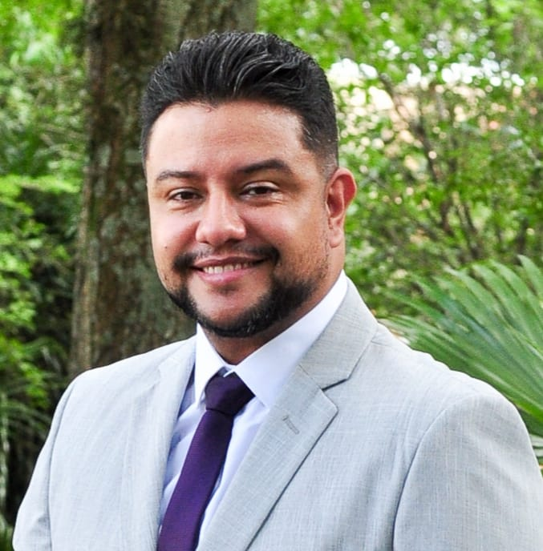

|Allan Silverio de Puala | WDD 130

Sou casado, pai de quatro filhos e um profissional apaixonado por tecnologia, inovação e aprendizado contínuo. Atuo na área de Tecnologia da Informação, com sólida experiência em infraestrutura de redes, segurança da informação, telecomunicações e soluções de colaboração. Minhas principais especialidades incluem tecnologias Cisco, Fortinet, Microsoft, VMware, redes LAN/WAN, firewalls, VPNs, telefonia IP, Cisco Unified Communications, Webex e soluções de Contact Center. Possuo certificação Cisco CCNA e estou constantemente buscando aprimorar meus conhecimentos em cibersegurança, automação e inteligência artificial. Sou uma pessoa dedicada, comprometida e movida por desafios, sempre procurando conciliar meu desenvolvimento profissional com aquilo que considero mais importante na minha vida: minha família, meus valores e meu crescimento pessoal.